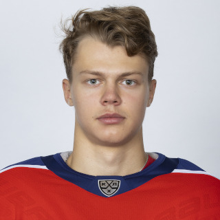
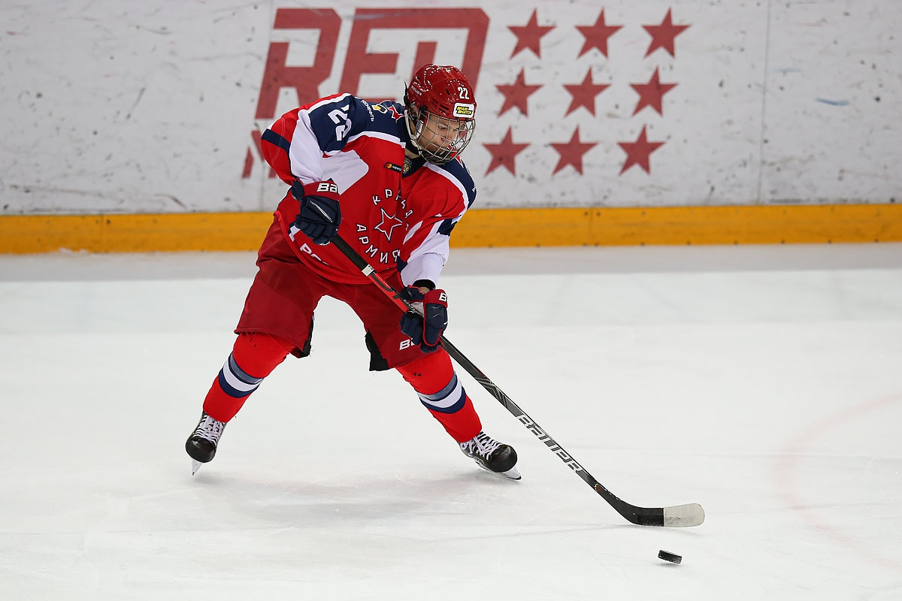
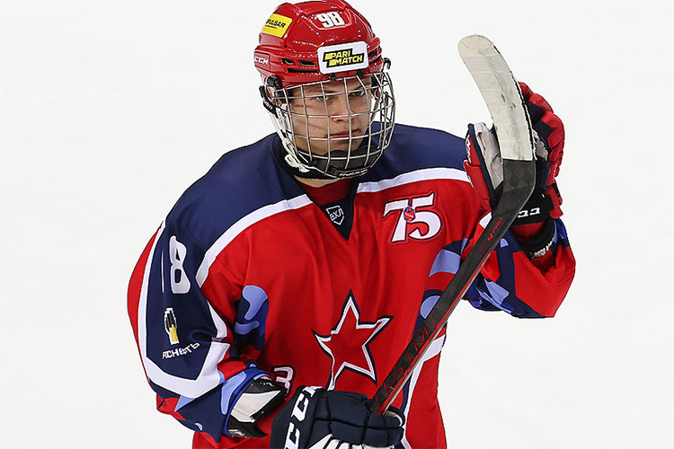

Владимир Грудинин №88
Защитник

Сыгранные игры 27
Голы 1
Передачи 1
Очки 2
| Дата рождения |
Возраст |
Гражданство |
Рост |
Вес |
Хват |
Контракт до: |
Вид контракта: |
| 9 декабря 2003 |
18 |
Россия |
178 |
71 |
Левый |
30.04.2023 |
КХЛ - односторонний |
Карьера:
ЦСКА 2021-2023, Звезда 2021-2020, Красная Армия 2020-2023


Достижения:
- Обладатель Кубка Гагарина (2022, 2023)
- Чемпион России (2022, 2023)
- Серебряный призёр Кубка Харламова (2022)
- Победитель регулярного чемпионата МХЛ (2022)
- Обладатель Кубка Западной конференции МХЛ (2022)